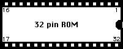
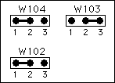
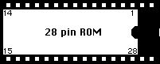

Carefully turn the computer over again. The top half of the case should detach easily now. You should also be able to move the disk drive aside.

This is NOT an easy task as we're talking about a double-sided circuit board here. If you don't know exactly what you're doing and have no prior experience with this sort of thing it's best left to a qualified engineer as you can easily ruin the circuit board, rendering the computer useless!!
Once the existing ROM chips have been removed, insert two new 32 pin IC sockets in their places.
The old ROMs are most likely of the shorter (28 pin) type, but the STe circuit board has room for
ROMs with 32 pins.
Observe the small notch at one end of the IC sockets and line them up with the silk-screen print
on the circuit board to avoid any confusion when installing the new chips.
You should have received two chips. Look at them closely and you'll find that one is marked
"E0" (or "LO") and
and the other "EE" (or "HI").
You should find similar identifications on the STe circuit board near the ROM sockets.
Insert the ROMs, observing the markings as well as the notch. Inserting them the wrong way will most likely damage both the ROMs and the computer!
Various types of ROMs can be used with the STe/Mega STe...
Use the table below as a guide on how to insert the 28 or 32 pin ROMs and how to
set the jumpers.
| Type | Description | No. of pins/placement | Jumper settings |
| 27010 (1)
27C1001 (1) 571000 |
128k x 8 (1 mbit) EPROM
128k x 8 (1 mbit) EPROM 128k x 8 (1 mbit) ROM |
 |
 |
| 27C1000 (2)
571001 |
128k x 8 (1 mbit) EPROM
128k x 8 (1 mbit) ROM |
|

|
| 531000 | 128k x 8 (128 kbit) ROM |
 |
|
| 27256 | 32k x 8 (256 kbit) EPROM |

|
|
| 27512 | 64k x 8 (512 kbit) EPROM |

|
|
|
STe TOS
(unknown ROM type) |
TOS 1.6/1.62 ROM
|
|
1 = Different manufacturers supply this type of EPROM
with two of the pins exchanged.
Only EPROMs with the following pin assignment can be used with this particular jumper setting:
pin 2="A16" pin 24="OE"Check with relevant datasheets for the particular EPROM in question.
2 = Different manufacturers supply this type of EPROM with two of the pins exchanged.
Only EPROMs with the following pin assignment can be used with this particular jumper setting:
pin 2="OE" pin 24="A16"Check with relevant datasheets for the particular EPROM in question.
The three ROM jumpers are marked "W102", "W103" and "W104" and are found close to the ROM sockets on the STe circuit board. They might look like resistors (actually 0 Ohm resistors to ease the automated production process at Atari) or wires soldered into position.
Refer to the table above to see how they should be positioned.
You can either cut the existing jumpers and resolder them back in their new positions from
the top (component-side) of the circuit board (as the circuit board is double sided), or you
can flip it over and solder the jumpers from the solder-side. The latter takes a little more
effort as you have to remove more than just the top cover and the disk drive.
You can also turn the STe circuit board over and solder from that side if you like.
If you want to get an additional "high-density" option when formatting from the desktop you can solder a wire across the "E6" jumper pad as shown in the following illustration (you'll find the jumper pad field near the ROM jumpers on the STe circuit board).

(naturally, adding this option only makes sense if you have (or plan to install) a high density disk drive in your machine. STe computers were all supplied with double-density (720 Kbyte) disk drives.
PS: since TOS 2.06 was designed to support High-Density disk drives, the "step-rate" is set to 6ms by TOS which has the side-effect of creating a nasty grinding noise with standard 720 Kbyte (DD) drives. If you don't have a HD disk drive you can easily change the step-rate back to 3ms (as with older TOS versions) by using a step-rate changer program such as HD_FDC or Setseek which you put in the AUTO folder.